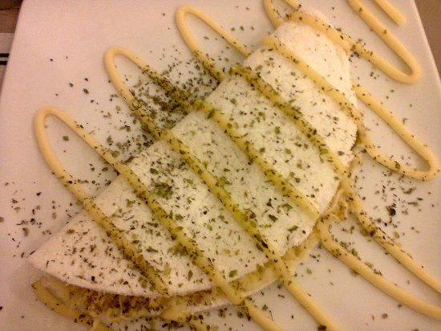
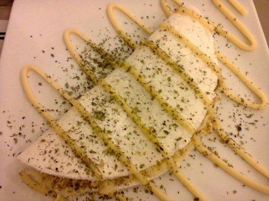
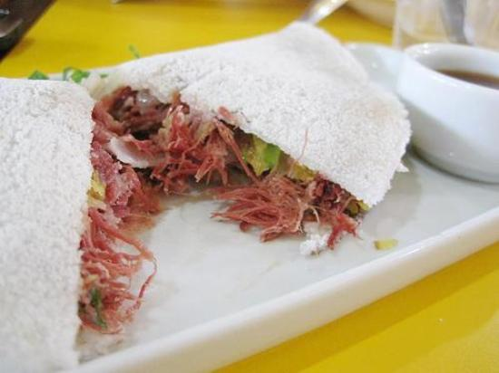

Frango com catupiry
Não deixe para amanhã o que você pode comer hoje
Nos primórdios pós-descobrimento, estrangeiros já notavam a existência dos beijus, tendo como procedência os índios que preparavam com a goma da mandioca. Posteriormente, o beiju foi adotado pelas senhoras portuguesas, saindo das aldeias e ganhando espaço no paladar europeu e atualmente na mesa de diversos brasileiros. Por ser preparado apenas com a mandioca, o beiju é um alimento natural que apresenta baixo teor de sódio, rico em carboidratos fáceis de digerir, sem gordura e sem glúten. Além de todos os benefícios supracitados, vale ressaltar que o outro grande benefício do beiju é o seu delicioso sabor! Pensando na saúde do consumidor, nossa empresa oferece os melhores beijus, com a possibilidade de prepará-los com diferentes e saborosos recheios, venham se deliciar conosco!
Frango com catupiry
Calabresa
Carne seca
